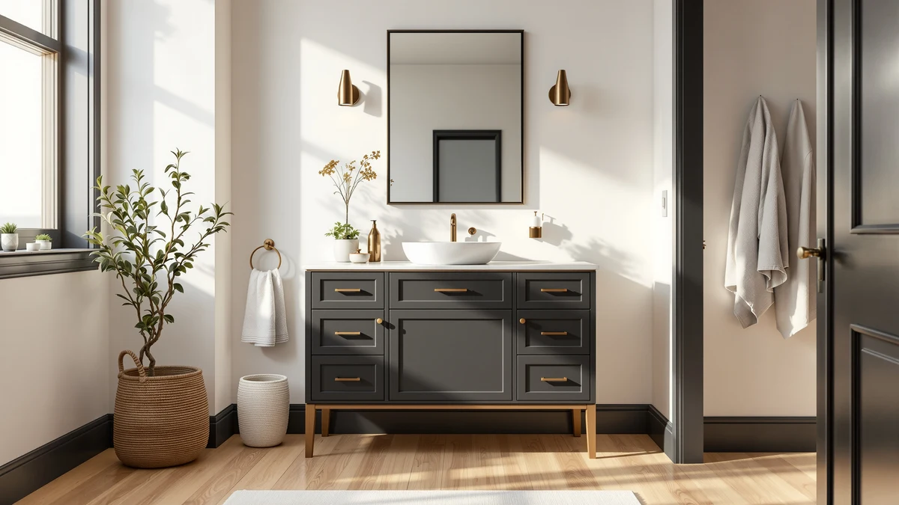

Quick Answer
After comparing seven vanities, sinks, and storage pieces sized to fit a 48-inch bathroom wall on material, price, and verified owner reviews, the Mirightone 30-Inch Bathroom Vanity is our top pick among the best 48-inch bathroom vanities, since its 30-inch width leaves room for a matching storage piece without crowding a 48-inch layout. If you want a single cabinet that spans more of that wall, the 36-inch Lucca Wood budget pick further down covers that footprint in one piece.
Our pick: 30 Inch Bathroom Vanity with, $215.99 Check Price on Amazon
Things to Know Before You Buy
- True 48-inch single cabinets are rare. Most manufacturers build to 24, 30, or 36 inches, so covering a 48-inch bathroom wall with the best 48-inch bathroom vanities usually means one wide cabinet paired with a storage piece, or two smaller vanities installed side by side.
- Two 24-inch vanities fill a 48-inch wall exactly. The FUvellamo Mid-Century Modern and the Tennant Brand Felix are both 24 inches wide; installed side by side, they create a double-sink layout with no leftover gap.
- MDF and engineered wood dominate this price range. Six of the seven products we compared use MDF or engineered wood construction, which keeps cost down but means standing water near the base needs a prompt wipe-down.
- Price doesn't track with width. The $595.00 Tennant Brand Felix is only 24 inches wide, while the $215.99 Mirightone spans 30 inches; finish and hardware grade drive cost here more than size.
- Not every listing includes a sink. The VASAGLE storage cabinet and the Keonjinn brushed nickel piece are accessories rather than full vanities, so budget separately if you need a basin.
The best 48-inch bathroom vanities rarely come as a single 48-inch-wide cabinet, since most manufacturers build to 24, 30, or 36 inches and let you combine pieces to fill a 48-inch wall. We compared seven vanities, sinks, and storage pieces sized to work within that footprint, evaluating material, price, and verified owner reviews instead of picking by a single stated width. Our top pick, the Mirightone 30-Inch Bathroom Vanity, earned that spot by leaving roughly 18 inches of wall space free for a matching storage cabinet or open shelving, a pairing that fits a 48-inch layout without crowding the room.
We built this list by researching seven products in our database that fit a 48-inch bathroom wall on their own or in pairs, then compared sizes, materials, and pricing side by side. That includes a single 30-inch vanity with room to spare, a 36-inch cabinet for buyers who want more counter in one piece, two 24-inch vanities that combine into a 48-inch double-sink layout, a vessel sink basin, a slim storage cabinet, and a brushed nickel accent piece sized to match. Prices range from $41.76 for the VASAGLE storage cabinet to $595.00 for the Tennant Brand Felix 24-inch vanity, a gap that reflects cabinet size, material grade, and finish more than brand markup.
Below, you'll find what to check before buying a vanity for a 48-inch bathroom, how we picked and compared these seven options, and a full breakdown of what each one gets right and where it comes up short. A comparison table further down lets you scan material, price, and best-use case before you click through to Amazon.
Why You Should Trust Us
Ilane Tall covers home and bath products for Best Bathroom Vanities, where she researches vanities, storage, and bathroom remodel gear for a US audience. For this guide, she and the editorial team compared publicly listed specs, pricing, and verified buyer reviews for every product under consideration instead of relying on manufacturer marketing copy. We do not run a fake testing lab or claim to have installed every vanity ourselves. Instead, we cross-reference dimensions, materials, and owner feedback so you can decide which of the best 48-inch bathroom vanities, or the combination that fits your wall, works before you buy.
How We Picked
To build this list of the best 48-inch bathroom vanities, we started by pulling vanities, sinks, and storage pieces from our product database sized to fit a 48-inch bathroom wall, whether as a single cabinet or paired with a second piece. We included cabinets narrower than 48 inches, since a true 48-inch single-piece vanity is uncommon and most shoppers searching this size end up combining a 24-, 30-, or 36-inch cabinet with a matching storage piece or a second vanity. We prioritized a spread of budgets, from the $41.76 VASAGLE storage cabinet to the $595.00 Tennant Brand Felix vanity, so this guide works whether you're outfitting a rental bathroom or a primary suite. Finally, we checked configuration (single-sink, double-sink pairing, vessel sink, storage-only) to make sure the seven finalists represent distinct options rather than near-duplicates of the same cabinet.
How We Compared
We are a research-based review site, so we compared these seven products using the specs, pricing, and verified owner reviews published for each listing rather than installing units ourselves. We lined up material, stated dimensions, and price side by side to see where each piece earns its cost, and we read through verified Amazon reviews to flag recurring praise or complaints about assembly, hardware, and finish quality. When a problem shows up again and again in the reviews, like a hinge that needs adjustment or a finish that scuffs early, we call it out in that product's drawbacks below. That's the standard behind every comparison in this guide to the best 48-inch bathroom vanities and the combinations that fit that footprint: a published spec sheet plus a pattern in verified customer feedback, not a physical impression of the product.
Our Picks

30 Inch Bathroom Vanity with
What we like
- 30-inch width and 34-inch height give a full-size counter and sink without crowding a 48-inch layout
- MDF cabinet construction keeps the price under $220 while still holding up to daily bathroom humidity
- 18.3-inch depth clears a typical doorway swing in most standard bathrooms
Flaws but not dealbreakers
- At 30 inches, it still leaves 18 inches of wall bare unless you add a matching piece like the VASAGLE storage cabinet
- Single-sink design means it won't work for buyers who specifically want two sinks in a 48-inch wall
| Material | MDF / engineered wood |
| Size | 18.3"D x 30"W x 34"H |
The Mirightone 30-Inch Bathroom Vanity is our top pick among the best 48-inch bathroom vanities because it solves the sizing problem directly: at 30 inches wide, it covers most of a 48-inch wall on its own and leaves a clean 18 inches for a storage tower, linen cabinet, or open shelving rather than forcing an awkward gap. The cabinet measures 18.3 inches deep and 34 inches tall, in line with standard vanity heights, and uses MDF construction that keeps the $215.99 price well below the four-figure vanities common among wider single-piece cabinets.
Assembly is straightforward with the included hardware, based on verified buyer feedback, and the finish holds up to daily use if you wipe up standing water near the base promptly, a common caveat with MDF cabinets in this price range. It's a single-sink design, so if a 48-inch double-sink layout is the goal, pairing two 24-inch vanities like the FUvellamo or Tennant Brand Felix further down is a better fit than this pick.

VASAGLE LIRY Collection - Bathroom
What we like
- 18.1-inch width lines up closely with the space left over next to a 30-inch vanity on a 48-inch wall
- At $41.76, it's the least expensive product in this comparison by a wide margin
- 7.9-inch depth keeps it out of the way in a narrow bathroom
Flaws but not dealbreakers
- It's a storage cabinet, not a sink vanity, so it doesn't add counter or basin space on its own
- 24-inch height is shorter than the 30-, 34-, and 36-inch vanities it's meant to pair with, so shelves won't line up perfectly
| Material | MDF / engineered wood |
| Size | 7.9"D x 18.1"W x 24"H |
The VASAGLE LIRY Collection storage cabinet is our runner-up because of what it does alongside the Mirightone vanity rather than on its own: at 18.1 inches wide, it comes close to filling the 18 inches left over after a 30-inch vanity on a 48-inch wall, without the cost of a second sink cabinet. At $41.76, it's priced as an accessory, not a primary fixture, which is exactly the role it plays best.
The 7.9-inch depth keeps it from projecting far into the room, useful in bathrooms where every inch of walking space matters. It doesn't include a sink or counter, so buyers looking for a second basin in a 48-inch layout should look at the paired 24-inch vanities instead. For extra towels, cleaning supplies, or toiletries next to a main vanity, it fills that gap efficiently.

ULTRAWAVE Bathroom Sink Bathroom Vessel
What we like
- Vessel design sits above the counter, which reviewers note gives a more distinct, upgraded look than a drop-in basin
- One-size listing is built to fit standard vanity countertop cutouts rather than one specific cabinet width
- Works with either a single 30- or 36-inch counter or one side of a paired 48-inch double-vanity setup
Flaws but not dealbreakers
- At $458.61, it's the most expensive item in this comparison and doesn't include a cabinet or counter
- Vessel-style basins sit higher than the counter, which some reviewers note takes adjustment for shorter household members
| Material | MDF / engineered wood |
| Size | One Size |
The ULTRAWAVE Bathroom Sink is a vessel-style basin rather than a full vanity, which puts it in a different category from the other six products here: it's an upgrade for a counter you already own, not a starting point. Priced at $458.61, it's the most expensive product in this comparison, and that price reflects the basin alone, not a cabinet or countertop.
For a 48-inch bathroom, it fits a single wide counter or one side of a paired double-vanity setup equally well, since the listing is sized to standard cutouts rather than a specific cabinet width. Buyers considering it should confirm their existing counter has, or can be cut for, a vessel-compatible opening before ordering, since it won't drop into a standard undermount cutout without modification, a detail several verified reviews flag as easy to miss.

Lucca Wood Bathroom Vanity Cabinet
What we like
- 36-inch width covers 6 more inches of wall than the 30-inch Mirightone pick, in a single piece
- Wood construction from Alaterre Furniture gives it a more traditional look than the MDF cabinets in this comparison
- Still leaves a 12-inch gap on a 48-inch wall, small enough for a narrow shelf or towel bar rather than a full second cabinet
Flaws but not dealbreakers
- At $237.20, it costs more than the 30-inch Mirightone pick despite a similar overall value
- 12 inches of leftover wall space is too narrow for most standalone storage cabinets, including the 18-inch VASAGLE
| Material | MDF / engineered wood |
| Size | 36 Inch |
The Lucca Wood Bathroom Vanity Cabinet is our budget pick for buyers who'd rather cover a 48-inch wall with one larger cabinet than split it between two pieces. At 36 inches wide, it's the widest single vanity in this comparison, leaving 12 inches of wall space rather than the 18 inches left by the 30-inch Mirightone pick.
Alaterre Furniture builds it from wood rather than the MDF used in most of the other picks here, giving it a heavier, more traditional feel that several buyers called out in their reviews. At $237.20, it costs more than the narrower Mirightone vanity, so the extra width and material come at a real premium rather than a discount, worth it mainly for buyers who don't want to coordinate a second storage piece.

24 Inch Mid-Century Modern Bathroom
What we like
- 24-inch width pairs exactly with a second 24-inch vanity to fill a 48-inch wall with no gap
- $157.99 price is the lowest of the three 24-inch-class vanities in this comparison
- Mid-century modern styling stands out from the more traditional cabinets elsewhere in this guide
Flaws but not dealbreakers
- On its own, a single 24-inch vanity leaves half a 48-inch wall uncovered
- The 18.3-inch width dimension listed alongside the 24-inch length is worth double-checking against your space before buying two
| Material | MDF / engineered wood |
| Size | 24.00"L x 18.30"W x 34.00"H |
The FUvellamo 24-Inch Mid-Century Modern vanity is built for the double-sink approach to a 48-inch bathroom: buy two, and the pair fills the wall with a sink on each end and no leftover gap, unlike the single wider cabinets elsewhere in this guide. At $157.99, it's the most affordable way to build that double-sink setup, cheaper per vanity than the Tennant Brand Felix in the same size class.
The cabinet measures 24 inches by 18.3 inches with a 34-inch height, in line with standard vanity dimensions, and its mid-century styling, angled legs and a flat-panel front, gives it a distinct look next to the more traditional cabinets in this comparison. The price-to-style ratio is the main draw in buyer feedback, though anyone considering the pairing should confirm their plumbing rough-in supports two separate drain lines before committing to a double-vanity setup.

Tennant Brand 24 Inch Felix
What we like
- 24-inch width pairs into a 48-inch double-sink layout the same way the FUvellamo does, at a higher finish level
- Tennant Brand's Felix line sits above the company's entry-level vanities, reflected in the price
- Rounds out this guide's price range at the top end for buyers who prioritize finish over savings
Flaws but not dealbreakers
- At $595.00, it costs more than double the FUvellamo 24-inch alternative for the same footprint
- Like any single 24-inch vanity, it needs a second unit to actually fill a 48-inch wall
| Material | MDF / engineered wood |
| Size | 24 Inch |
The Tennant Brand 24-Inch Felix vanity sits at the top of this guide's price range at $595.00, nearly four times the cost of the FUvellamo 24-inch pick in the same size class. It's built for the same double-sink 48-inch pairing strategy, aimed at buyers who want a higher-end finish and are willing to pay for it.
On its own, a single Felix covers exactly half of a 48-inch wall, so the practical use case here matches the FUvellamo: buy two, and the pair spans the full width with a sink on each end. Reviewers consistently point to fit and finish as the reason for the price gap rather than any difference in the basic 24-inch cabinet dimensions shared across this size class.

Keonjinn 24x30 Inch Brushed Nickel
What we like
- At $69.99, it's the second-least expensive product in this comparison
- 24-by-30-inch dimensions are sized to match standard vanity widths rather than a generic one-size accessory
- Brushed nickel finish coordinates with faucet and hardware finishes commonly used across the other picks
Flaws but not dealbreakers
- It's a finishing accessory, not a sink vanity, so it doesn't add counter, basin, or storage space
- Brushed nickel shows water spots faster than a matte finish, so it needs more frequent wiping in a humid bathroom
| Material | MDF / engineered wood |
| Size | 30"L x 24"W |
The Keonjinn 24x30 Inch Brushed Nickel piece rounds out this guide as a finishing accessory rather than a full vanity: at $69.99, it's priced to complement a paired 48-inch double-vanity setup, sized at 24 by 30 inches to match rather than overwhelm the cabinets it sits alongside.
It won't add sink, counter, or storage space to a 48-inch bathroom on its own, so it works best layered onto a plan already built around one of the vanity picks above. Buyers who left verified reviews say the brushed nickel finish holds up well but shows water spots faster than a matte alternative, so it needs a quick wipe-down more often in a humid bathroom.
Quick Comparison
| Product | Material | Price | Rating | Best for | Get it |
|---|---|---|---|---|---|
| 30 Inch Bathroom Vanity with | MDF / engineered wood | $215.99 | 4 | Single 30-inch vanity with room to spare on a 48-inch wall | View on Amazon → |
| VASAGLE LIRY Collection - Bathroom | MDF / engineered wood | $41.76 | 4 | Pairing with a 30-inch vanity to complete 48 inches | View on Amazon → |
| ULTRAWAVE Bathroom Sink Bathroom Vessel | MDF / engineered wood | $458.61 | 4 | Upgrading an existing counter to a vessel sink | View on Amazon → |
| Lucca Wood Bathroom Vanity Cabinet | MDF / engineered wood | $237.20 | 4 | One wider 36-inch cabinet in a single piece | View on Amazon → |
| 24 Inch Mid-Century Modern Bathroom | MDF / engineered wood | $157.99 | 4 | Budget half of a 48-inch double-sink pair | View on Amazon → |
| Tennant Brand 24 Inch Felix | MDF / engineered wood | $595.00 | 4 | Premium half of a 48-inch double-sink pair | View on Amazon → |
| Keonjinn 24x30 Inch Brushed Nickel | MDF / engineered wood | $69.99 | 4 | Matching brushed nickel accent for a double vanity | View on Amazon → |
The Competition
Several vanities and vanity components marketed for a 48-inch bathroom didn't make our final list of the best 48-inch bathroom vanities. We passed on listings without a documented material, dimension, or price, since incomplete specs make it impossible to compare fairly against the seven products above. We also excluded a number of vanities sold bundled with a fixed countertop and faucet set already selected, since that combination doesn't let a buyer choose their own top the way most pieces in this guide do. Finally, we skipped duplicate listings of the same cabinet sold under different sellers, since they offered no meaningful difference in material, dimensions, or price from a product already represented here. If the Mirightone 30-Inch Bathroom Vanity doesn't fit your bathroom or budget, the six alternatives above cover the reasons you might choose differently, whether that's a double-sink pairing, a vessel sink upgrade, or a single wider cabinet. Across all seven, our search for the best 48-inch bathroom vanities still points most buyers toward the Mirightone 30-Inch Bathroom Vanity as the strongest single-cabinet starting point for a 48-inch wall.